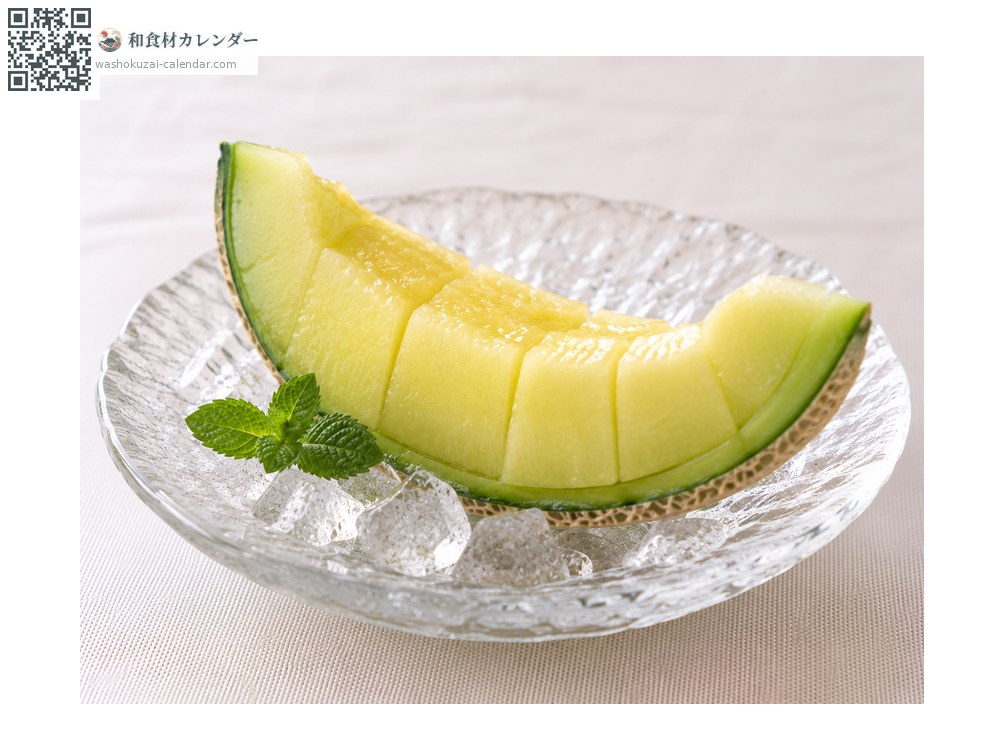
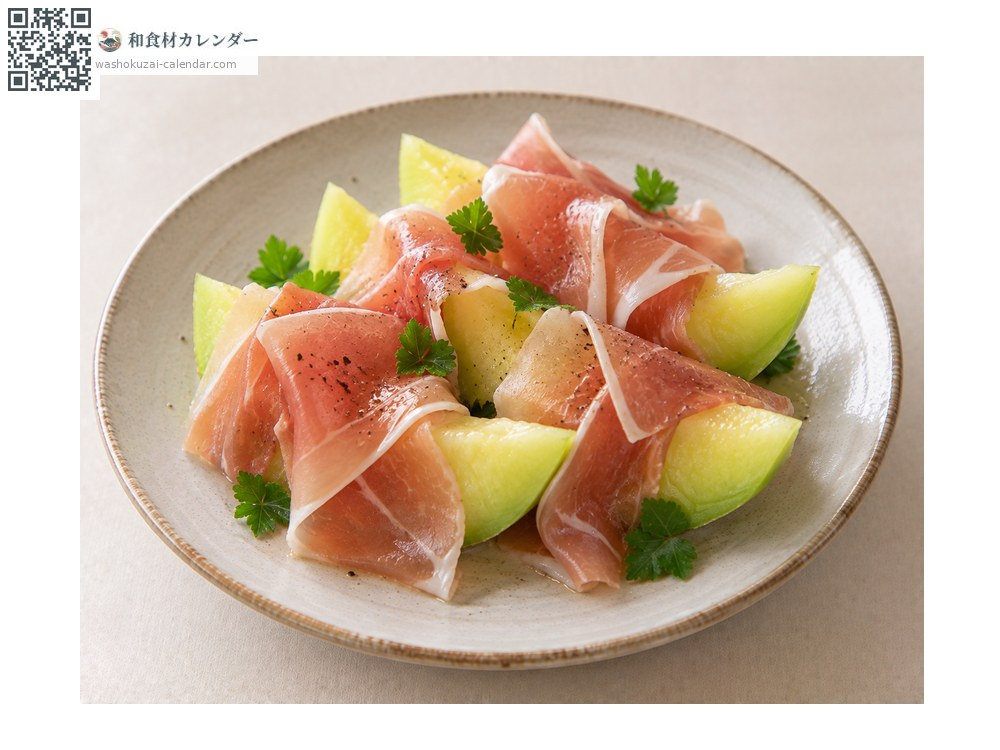
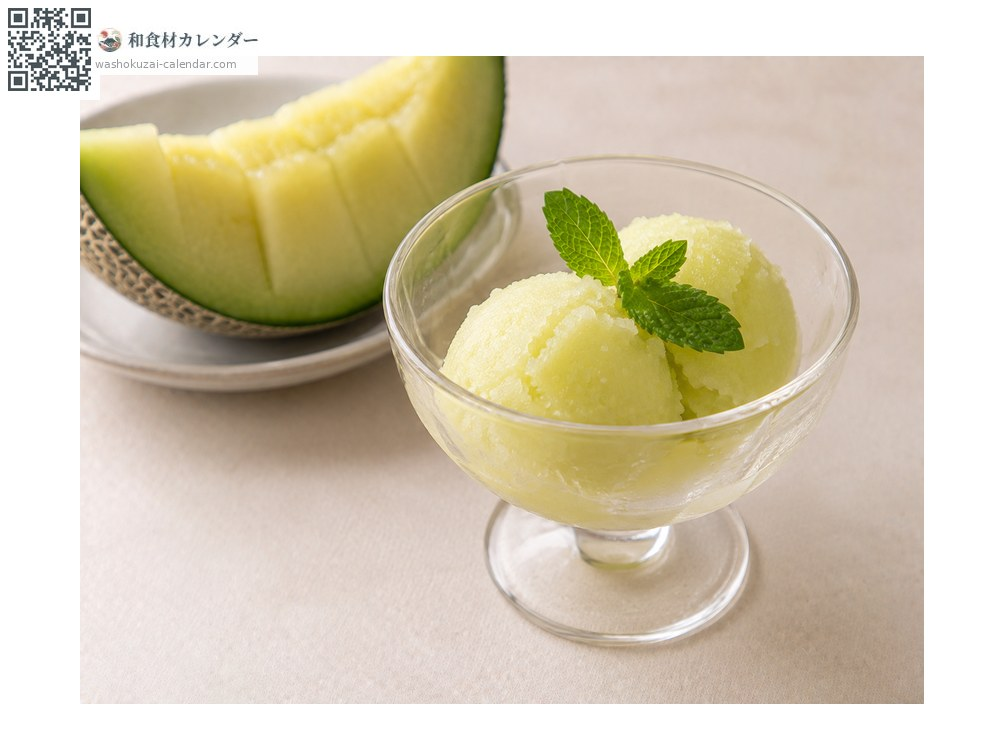
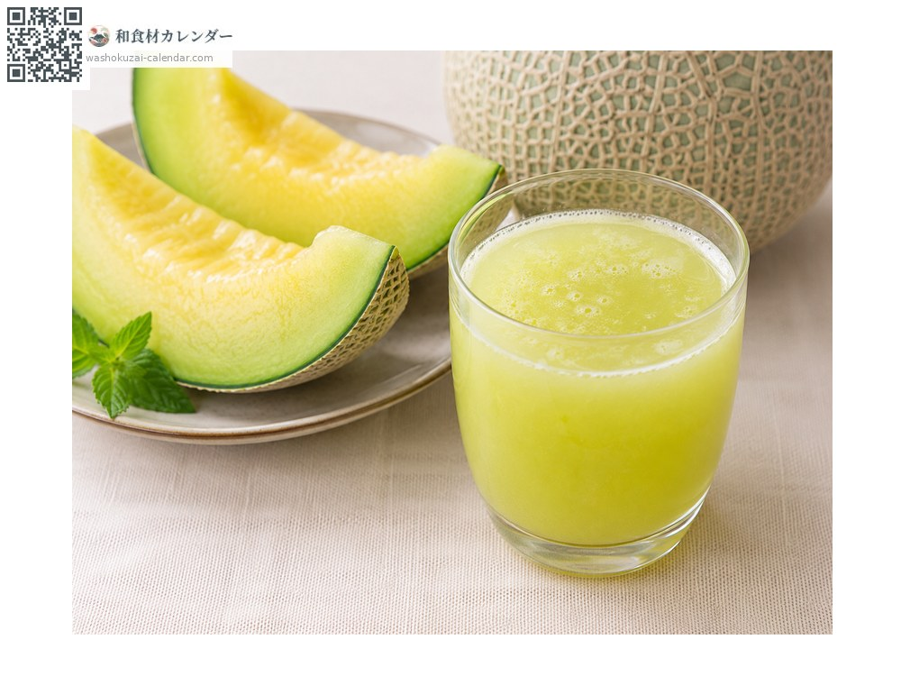

果物
メロン
めろん
旬は5月・6月・7月

旬の時期
1月
2月
3月
4月
5月
6月
7月
8月
9月
10月
11月
12月
旬出回り
調理法

そのまま
食べ頃を見極めて。

生ハム添え
塩気と甘みの組み合わせ。

シャーベット
果肉を凍らせて。

ジュース
ミキサーで。
選び方
網目が細かく均一に盛り上がっているもの。おしりを押して少し弾力があれば食べ頃。
保存方法
常温で追熟。おしりが柔らかくなり香りが強くなったら、食べる2〜3時間前に冷やす。
主な産地
豆知識
網目は果実の成長で表皮が裂け、それが治った跡。網目が細かく均一なほど良品とされる。